Silvest Vally
Silvest
- 1. Lord Aelfwyn
- 2. Ceric
- 3. Raglnak
- 4. Jodrich
- 5. Howard Kaps
- 6. Schrute
- 7. Etrois
- 8. Sozal
- 9. Karter Jons
- 10. Wilson Johnson
- 11. Galen
Eastwatch
- .
- .
- .
- .
- .
- .
Cliffside
- .
- .
- .
- .
- .
- .
- .
Silvest Quest
Knight of Silvest
| Difficulty | Skills |
|---|---|
| Apprentice | Combat |
| NPC Quest Start | Monster | Reward |
|---|---|---|
| Lord Aelfwyn | Many different creatures |


 ">
">


|

 Speak to Lord Aelfwyn
Speak to Lord Aelfwyn
Lord Aelfwyn: I do not speak to those who have not pledged allegiance to Silvest...begone!
You must go speak to the Silvest Steward next to the spawn gate.
Silvest Steward: Welcome to Silvest! You made an excellent choice in comeing here He shakes your hand I'm the Steward of Silvest. I'm here to help Aelfwyn manage the city and ensure it has what it needs.
I've been doing this for many years, but never before have I seen someone with such wisdom and energy! In fact, you'd fit right in around here. Yes, I can see it now! Why don't you align with our city and help make it the best in the land? There are incredible perks. All Silvest citizens are granted 1 extra orb of intelligence... err not that you'd need it. Your intelligence can reach 101, too. Well, you can
only pick one city... He mumbles something about the Orcs and Elves ...for tax reasons. It's very complicated.. Just let me know and I'll sign you up right away! Do you wish to align with Silvest?
Player: Yes!
Silvest Steward: Splendid! Our city is already better for it! Well, no time to chat when there's work to be done. See you around! Oh don't forget to see Aelfwyn in the town hall.
- You have gained the intelligence of Silvest!
- You have gained 500 faction with the city of Silvest!
- 2,750 Experience Pool experience may very
Speak to Lord Aelfwyn.
Lord Aelfwyn: Greetings! Ah...A loyal servant of Silvest... The times are dire! Forces of evil are threatening our fair city. Lotor and his Knights are doing the best they can, but I fear it is not enough. For the future of Silvest I need brave warriors willing to seek out and slay the foul creatures that plague us... Are you willing to help?
Player: Yes! His evil must be defeated! The task at hand is most dangerous! I believe this evil has been spawned by Talazar himself! Do you dare stand against this Dark Fiend?
Player: Yes! His evil must be defeated!
Lord Aelfwyn: Very good! May Silvest be saved... The task I will give you will test your courage and wisdom! Return to me after Talazar's power has been weakened!
QUEST RECEIVED: Knight of Silvest, Lord Aelfwyn of Sivlest asks you to slay x amount of Creatures.
Head out and kill the required creatue. You will be updated as you kill them.
QUEST UPDATE: Kill x amount more creature for Lord Aelfwyn of Silvest
QUEST UPDATE: Knight of Silvest, Return to Lord Aelfwyn in Silvest!
Lord Aelfwyn: Silvest be praised! You have made the human lands more secure from the evil plague of Talazar... Speak with Lady Aelfwyn about further rewards for your service. She is in Varg, a short journey north and west from Silvest at the Temple of Kuthos. Thank you again...
- You have gained X amount of faction with the city of Silvest
- Ramdon Amounts Experience Pool experience may very
Travel out the west side of silvest to head to Varg.
Speak to Lady Aelfwyn.
Lady Aelfwyn: Greetings loyal warrior of Aelfwyn... Honored servant. Here is your reward for your loyal patronage. Continue to serve...
Repeat this quest gaining Faction Points to earn the complete Silvest Set.
- 500 Faction Points Necklace of Silvest
- 800 Faction Points Ring of Silvest
- 1300 Faction Points Gloves of Silvest
- 1800 Faction Points Belt of Silvest
- 2300 Faction Points Helm of Silvest
- 2800 Faction Points Boots of Silvest
- 3300 Faction Points Cloak of Silvest
- 3800 Faction Points Guardian of Silvest
- 4300 Faction Points Leggings of Silvest
- 4800 Faction Points Armor of Silvest
Quest Complete
You have gained faction with Silvest for your heroic work! See Lady Aelfwyn in Varg about a reward.Spice It Up
| Difficulty | Skills |
|---|---|
| Apprentice | Tradeskill |
| NPC Quest Start | Reward |
|---|---|
| Ceric |

|
 Speak to Ceric.
Speak to Ceric.
Ceric: Greetings, traveler! Perhaps you're looking to earn a little coin? My brother Cearl and I have been looking to spice up the menu here at the Triddle for some time, but I simply can't leave my establishment. If you have the talent for fishing, what say you to helping a busy man?
Player: I'm always looking for extra coin!
Ceric: Fantastic! I think a nice, flaky fish would be just the thing for hungry belies come out of the dark woods for sup! Bring me Bluefin so I can experiment. 50 should be enough for now. You should be able to find plenty of them at the docs to the south. Good luck!
QUEST RECEIVED: Spice it Up, Fish for 50 Bluefin for Ceric, owner of Triddle's Tavern in Silvest.
Head south to the dock with your fishing pole
 Stand next to the water source click on your fishing pole then on the spot in the water you want to try and catch a fish. Keep fishing until you get all 50 Bluefin.
Stand next to the water source click on your fishing pole then on the spot in the water you want to try and catch a fish. Keep fishing until you get all 50 Bluefin.
QUEST RECEIVED: Spice it Up, You have collected enough Bluefin to complete the quest.
Ceric: Ah, welcome back! I was hoping to see you - and how many bluefin have you got there? you have the fish? Splendid! This will bring in more customers, I'm sure of it! And as for your reward... He reaches beneath the counter nad produces a brown sack that clinks as it's placed on the counter and nudged in your direction. I appreciate the help. Now to test out some new dishes!
- Gold Received: 500
- 88,000 Experience Pool experience may very
Ceric has paid you 500 gold for your help.
Quest Complete
Join Forces
| Difficulty | Skills |
|---|---|
| Apprentice | Combat |
| NPC Quest Start | Reward |
|---|---|
| Raglnak |


|
 Speak to Raglnak.
Speak to Raglnak.
Raglnak: Good day, young adventurer. I hope your journeys are gratifying. BARTENDER! BARTENDER! Antoher ale! He grumbles The evil upon this land has made my expeditions more dependent upon my swordsmanship. Do you agree?
Player: Yes, I have noticed the same, Raglnak
Raglnak: Aye, indeed you have, lass! I cannot even chop wood in the forest without keeping my sword in the other hand... Dark times, indeed. Those of us with good and noble intentions should band together! He raises his glass to you Let us join our strength to eliminate the growing evil! I shall train you in the art of Sword Combat... And you .. You shall listen to my
instruction, and humor me with your naive questions! Ho Ho! What say you?
Player: Yes, let us slay evil together!
Raglnak: Admirable decision! Bartender! Give this adventurer an ale!  Thy training begins now. Take this practice sword...
You must kill one kobold, one snake, and one orc renegade with this sword. This will prove you have the agility and courage to advance in sword combat. Return to me when your deeds are accomplished! I myself have much work to attend to in town...
Thy training begins now. Take this practice sword...
You must kill one kobold, one snake, and one orc renegade with this sword. This will prove you have the agility and courage to advance in sword combat. Return to me when your deeds are accomplished! I myself have much work to attend to in town...
QUEST RECEIVED: Join Forces, You leave Silvest with Raglnak's practice sword. Use it to kill one Sanke, one Kobold, and one Orc Renegade.


 Head out of town there are plenty of Snakes around Silvest. The Kobolds are northeast of silvest around the mountain towards Silvest Lake. The Orc Renegades are located in a cave in the southern mountains. Head south to the docks then continue east following the mountain north to the cave.
As you kill each type you will be updated.
Head out of town there are plenty of Snakes around Silvest. The Kobolds are northeast of silvest around the mountain towards Silvest Lake. The Orc Renegades are located in a cave in the southern mountains. Head south to the docks then continue east following the mountain north to the cave.
As you kill each type you will be updated.
QUEST UPDATE: You have vanquished an Snake for the Sword Quest!
QUEST UPDATE: You have vanquished an Kobold for the Sword Quest!
QUEST UPDATE: You have vanquished an Orc Renegade for the Sword Quest!
When you have completed the task you will be updated one more time.
QUEST UPDATE: Join Forces, You have completed your training. Return to Raglnak!
Raglnak: Let's see what you have accomplished... You have killed a Kobold! You have killed the Snake! You have killed the Orc Renegade! You have proven your worthiness to wield a real warrior's weapon. Here is a sword for your accomplishments and if anything, you now have the ability to practice on your own. Fare thee well, young adventurer.
- ITEM Received: Heavy Short Sword
- 5,500 Experience Pool experience may very
You have proven yourself to Raglnak and received a heavy sword in return!
Quest Complete
Put Them Down
| Difficulty | Skills |
|---|---|
| Apprentice | Combat |
| NPC Quest Start | Reward |
|---|---|
| Jodrich |
|
 Speak to Jodrich
Speak to Jodrich
Jodrich: Jodrich eyes you up and down He laughs nervously No need to come so close, there, hehehehehe... Though, I could use your help... I have a problem, you see. I'm terrified of bats and an even worse variety has been becomeing increasingly common around Silvest lately...
Please. I need you to put them down!!! They're calle.. He gulps ...Sonic Flyers.
Player: Yes, let us slay evil together!
Jodrich: My gratitude, stranger! I don't think i can sleep until you do. He wrings his hands Don't underestimate them! And, please, come back safely. I'm scared to put a number on it, but to be fair, lets agree that you will kill 50 of those things.
QUEST RECEIVED: Put Them Down, Slay 50 Sonic Flyers for Jodrich of Silvest.
The Sonic Flyers spawn near the east side of Sivlest near the mountain range. As you slay them your will be updated.
QUEST UPDATE: You have killed 50 Sonic Flyers for Jodrich! When you have killed them all you will be updated one last time.
QUEST UPDATE: Put Them Down, Return to Jodrich in Silvest!
Jodrich: You did it? I'm so grateful! Now I can sleep peacefully knowing that they won't be able to get me in the night! Or at least it will buy me enough time to collect some firewood for my hearth... Here... I have some money I've save up. It should be a suitable reward. He hands you a sack of coin I just hope they don't bother me anymore... Good luck with your travels!
- GOLD RECEIVED: 1000
- 11,000 Experience Pool experience may very
Quest Complete
Jodrich has rewarded you for dealing with his problem.Nest of Pests
| Difficulty | Skills |
|---|---|
| Apprentice | Combat |
| NPC Quest Start | Reward |
|---|---|
| Howard Kaps |
|
Speak to Howard Kaps.
Howard Kaps: I went out for a stroll and came across a bed of fierce Fire Ants. These ants are not the usual garden-variety..the sting is so painful it lays you up in bed for days! To think that our good town could be victimized by these pests...it's maddening! Help exterminate the mound by killing 100 of them for me!
Player: I shall crush them underfoot!
Howard Kaps: That's the spirit! King Lotor would be wise to recruit more like you. Now then. The nest is to the northwest, near the mountains. Remember - you must kill them in their nest!
QUEST RECEIVED: Nest of Pests, Exterminate 100 Fire Ants for Howard Kaps, a concerned citizen of Silvest.
 Travel northeast to the Fire Ant mound. You need to kill them within the area of their mound. As you are killing them you will be updated.
Travel northeast to the Fire Ant mound. You need to kill them within the area of their mound. As you are killing them you will be updated.
QUEST UPDATE: You've killed 100 Fire Ants for Howard Kaps
Once you have kill all of them you will be updated one last time.
QUEST RECEIVED: Nest of Pests, Return to Howard Kaps, in Silvest Guard Outpost, with news of the Fire Ant extermination.
Howard Kaps: The mound has been cleansed! It is safe to stroll the paths of Silvest once again! Take this gold as a token of my appreciation!
- GOLD RECEIVED: 2500
- 27,500 Experience Pool experience may very
Quest Complete
You exterminated the Fire Ants for Howard KapsThe Wrong Crowd
| Difficulty | Skills |
|---|---|
| Apprentice | Combat |
| NPC Quest Start | Reward |
|---|---|
| Howard Kaps |
|
Speak to Howard Kaps.
Howard Kaps: It's a good day to stroll in the mountains to the north of town! perhaps you would like to help with another matter? My son fell in with a foul group who call themselves 'Cultists'. I was able to pry him from their grasp, but not before thye had stolen all of his possessions... .. including a ring
that my father had given him. If you are willing (and I think you are able) please venture to the west to their temple and reclaim this ring.
QUEST RECEIVED: The Wrong Crowd, Retrieve the Kaps family ring from the cultist temple west of Silvest.

 The Cultist lair is just west of Silvest. When you get their just kill them until you find the ring. As you kill them you will be updated that you didn't find the ring. You search the body, but don't find anything. When you find the key you will be updated.
The Cultist lair is just west of Silvest. When you get their just kill them until you find the ring. As you kill them you will be updated that you didn't find the ring. You search the body, but don't find anything. When you find the key you will be updated.
QUEST UPDATE: The Wrong Crowd, You fond the Kaps family ring! Return to Howard Kaps.
Howard Kaps: It's a good day to stroll in the mountains to the north of town! You fond the ring! Veldan be praised! Take this as a small token of my thanks for your service!
- GOLD RECEIVED: 5,000 Gold
- 49,500 Experience Pool experience may very
Quest Complete
You returned the family ring to Howard KapsJuicy
| Difficulty | Skills |
|---|---|
| Apprentice | Traveling |
| NPC Quest Start | Reward |
|---|---|
| Schrute | EXP |
Speak to Schrute.
Schrute: I need someone to deliver news about this year's crop of beets ot my cousin Mose in Vrethpool. Tell him the harvest was quite good and he should be expecting his annual supply of beet juice within the month!
Player: Beet juice, you say? Well...
Schrute: Good, good. I've plenty work to tend here with the beet harvest. My hands will be pink for months!
QUEST RECEIVED: Juicy, Schrute of Silvest asked you to tell Mose in Vrethpool about his terrific beet harvest.
 Schrute: The beet crop is in? oh happy day! I can't wait to taste the sweet nectar of Schrute's beets!
Schrute: The beet crop is in? oh happy day! I can't wait to taste the sweet nectar of Schrute's beets!
- 5,500 Experience Pool experience may very
Quest Complete
You delivered the juicy news to Mose.Quite Entranced
| Difficulty | Skills |
|---|---|
| Apprentice | Searching & Combat |
| NPC Quest Start | Reward |
|---|---|
| Etrois |

|
Speak to Etrois.
Etrois: Who's there??? I hear your footsteps approach...though you are not known to me... She draws a dagger
Player: Peace! I am not an enemy!
Etrois: Excuse me for being so hostile. She sheaths her dagger I wasn't raised that way, I assure you! Since those cursed marsh lights took my sight, I have become quite fearful...
Option: 1
Player: Marsh lights?
Etrois: Aye, marsh lights. Tis a mystical green light that rises up out of the swampy lands at night. I became quite entranced with them... Gandmam says that evil fairy folk live inside them and wish us ill. I didn't want to believe her, though now I know better! I...hate to bother you..but I wonder...I heard there could be a cure for my disease.
I need a small assortment of items for this recipe, but I cannot collect it myself, obviously.
Option: 2
Etrois: She nods It was difficult at first, but I've become accustomed to my life. Do not feel sad... She smiles cheerfully Still, I do miss seeing beautiful magic spells, and lovely flowers... I...hate to bother you...but I wonder... I heard there could be a cure for my disease. I need a small
assortment of items for this recipe, but I cannot collect it myself, obviously.
Player: Say no more. I will help find a cure, lady.
Etrois: Her face brightens What hope I have! Thank you, kind soul! First, you must gather a goodly number of bloodroot. By foraging, of course. I hear it has other healing properties as well... I heard Father say that he had used it on his wounds, once.
QUEST RECEIVED: Quite Entranced, Forage in the wilderness and collect 43 Bloodroot for Etrois of Silvest.
Grab your foraging stick  and start foraging any where you can untill you collect 43 bloodroot.
and start foraging any where you can untill you collect 43 bloodroot.  When you have them all you will be updated.
When you have them all you will be updated.
QUEST UPDATE: You have collected enough Bloodroot to complete the quest.
Return to Etrois with the bloodroot.
Etrois: Is that you? She inclines her ear in your direction I hope you fare well in your quest to find bloodroot... Ah, bloodroot! It smells so fresh! I do not envy your next task... That is, if you still want to help me. I next need a small nuber of scorpion stingers...
QUEST UPDATE: Quite Entranced, Harvest 23 Scorpion Stingers for Etrois.
- 1,650 Experience Pool experience may very
Head outside of town and kill scorpions untill you collect enough Scorpion Stingers.
QUEST UPDATE: You have collected enough Scorpion Sting to complete the quest.
Etrois: Ah, I thought that was you! And you are back with scorpion stingers, yes? She counts the stingers This is terrific! All 23. I cannot bear to be near those horrid scorpions...ugh! Nasty, nasty creatures. Now I almost have it! I just need a small handful of toad eyes. 13. Plague toads are most common in the woods. It should not take very long! Though I am curious about how you will get them out of the head...
QUEST RECEIVED: Quite Entranced, Harvest 13 Toad Eyes for Etrois.
Head out to the Cultist Lair west of town. Kill Plague Toads untill you collect enough Toad Eyes.
QUEST UPDATE: You have collected enough Toad Eye to complete the quest.
Etrois: Back again, I see - or here, rather! You have returned with toad eyes, I hope? She collects the components in here apron Now I must spend some time preparing this tincture... Thank you! Thank you again, I say! The gods have heard my prayer - I will no longer be the outcast! Though I have not much to reward you I did find this orb in the dust under the troughs here. I thought it felt heavy, and interesting... If nothing else, you could sell it. Fare well, and may your journeys be rewarding!
Etrois hands you an orb which swirls with alchemical magic.
- ITEM RECEIVED: Mystic Orb of Alchemy
- 22,000 Experience Pool experience may very
Quest Complete
Etrois rewarded you for your help with a strange object she found on the groundLoyal
| Difficulty | Skills |
|---|---|
| Apprentice | Combat |
| NPC Quest Start | Reward |
|---|---|
| Zerev | "> |
 Speak to Zerev, Oh, hello... *The boy stares solemnly at you* You do not look like you are from here. i'm from across the sea. Ho? I wish I could go across the sea... It is so sad here. The ones that die want
to stay dead but rise again. The ones taht we want to see again we cannot bring back. What do you mean? My dog Allie died. She got bit by a black adder, and we couldn't save her. *His lip quivers* Father said we canot pay the mage to resurrect her.
It costs too much and our leather shop does not make good coin. *He bites his lip* So we buried her out in the woods with the other pets. By now she is probably wandering the woods as a skeletal pup. Could you find her? I know she's gone, but I hate to think of her hurting people.
Of course. I will find the dog. Thank you... Just look for one with a collar. She found something one day digging outside of town, so I hung it on her neck.
Speak to Zerev, Oh, hello... *The boy stares solemnly at you* You do not look like you are from here. i'm from across the sea. Ho? I wish I could go across the sea... It is so sad here. The ones that die want
to stay dead but rise again. The ones taht we want to see again we cannot bring back. What do you mean? My dog Allie died. She got bit by a black adder, and we couldn't save her. *His lip quivers* Father said we canot pay the mage to resurrect her.
It costs too much and our leather shop does not make good coin. *He bites his lip* So we buried her out in the woods with the other pets. By now she is probably wandering the woods as a skeletal pup. Could you find her? I know she's gone, but I hate to think of her hurting people.
Of course. I will find the dog. Thank you... Just look for one with a collar. She found something one day digging outside of town, so I hung it on her neck.
QUEST RECEIVED: Loyal, Zerev's dog is now wandering the woods near Whisperdale as a skeletal pup. Put her to rest.
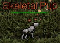
Venture out of Whisperdale to the northwest near the coast. There is a small random spawn of Skeletal Pups you may have to kill other monsters to get them to spawn. When you start to kill them you will be updated with a message. This Skeletal Pup doesn't have anything on its neck...
When you do kill the correct one you will be updated. QUEST UPDATE: A large totem hangs around this Skeletal Pup's neck. It must be Zerev's dog Allie.
QUEST UPDATE: Loyal, You found what was left of Zerev's dog Allie. Return to him in Whisperdale..
You did find her, after all... I was hoping you wouldn't, but that thing around her neck - that proves it. You keep it. It reminds me of her too much.
- ITEM RECEIVED: Totem of the Wolf Pup
- 22,000 Experience Pool experience may very
Quest Complete
You found Zerev's dog Allie, resurrected as a Skeletal Pup. He gave you her Totem of the Wolf Pup.Riddles
| Difficulty | Skills |
|---|---|
| Apprentice | Searching |
| NPC Quest Start | Reward |
|---|---|
| Rydyl |

|
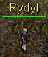
Speak to Rydyl, Hello! Did you see any spiders on the way in? There are a lot of spiders around here. They're creepy! Would you like to hear my riddle? Yes, please, I'd love to! Stronger than steel, Lighter than air; Stolen from monsters to make elves fair. What am I?
Bring me the answer, and I'll give you a prize!
QUEST RECEIVED: Riddles, Rydyl of Autumn will give you a prize if you solve his riddle.
The answer to the riddle is Raw Silk. 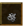You can buy from a store or kill the Black Widow Hatchling in the area.
When you take the Raw Silk to Rydyl you must drag and drop the Raw Silk on him. If you talk to him he will tell you the riddle again. You found the key to the riddle! Now you get Rydyl's key lime! *Rydyl tosses you a lime, giggles and runs away*
- ITEM RECEIVED: Lime
Quest Complete
Rydyl gave you limes in exchange for the raw silk. This quest is repeatableNoisy Neighbors
| Difficulty | Skills |
|---|---|
| Adept | Combat |
| NPC Quest Start | Reward |
|---|---|
| Vesos | 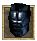"> |
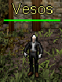
Speak to Vesos, Hail young adventurer! Enjoying your travels in the land of the Astari? Say, if you aren't too busy, can you help a friend of the land? He is an old fisherman human that resides in the Darkwoods. He has told me that he has been haveing trouble fishing lately. It's mostly due to the Lizardman stronghold on the coast. Could you please go to him?
Just follow the coast north from Whisperdale. Go past the Lizardmen until you find a dock. You will find him there. His name is Old Gerald. Please help him.
QUEST RECEIVED: Noisy Neighbors, Talk to Old Gerald, north of Whisperdale and the Lizardmen.
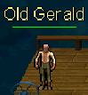 Old Gerald is located on the west coast, best way to find him is to follow the road north then head west right be for you get to Vezryl Estate. He is on the dock. Hello sir, or is it Lady? I can't qite tell... Well no matter. Have you come here to fish? Good luck! I haven't had a bite in ages. Those stinkin Lizardmen are eating all the fish. I moved to this area to enjoy the peace and quiet. And now I have to deal with those scale covered Muckstompers. Say, could you go and rough up their dwelling? Scare them out of the place so I can fish again. Tere should be 5 Lizardmen Totems located down there. I had a chance to go there and deface 10 of them already. I just need help finishing the task. Consider it done, I hate those lizards too! *He slaps you on the back* Hee Hee! Well don't let me keep you waiting. Just head south of here to find their camp.
QUEST RECEIVED: Noisy Neighbors, Deface the remaining 5 Lizardman Totems for Old Gerald.

 Go back to the east then just south across the bridge to the Lizardmans camp. There are lots of Lizard Totems but you have to find the 5 that still need defaceing. The map attached has the coordinates of all 5 totems. When you find one you will be updated QUEST UPDATE: You have defaced one of the five Lizardman Totems for Old Gerald. When you find the final one you will be updated.
Go back to the east then just south across the bridge to the Lizardmans camp. There are lots of Lizard Totems but you have to find the 5 that still need defaceing. The map attached has the coordinates of all 5 totems. When you find one you will be updated QUEST UPDATE: You have defaced one of the five Lizardman Totems for Old Gerald. When you find the final one you will be updated.
QUEST UPDATE: Noisy Neighbors, Return to Old Gerald about the totems.
Thank you for defaceing those totems! Maybe they will see it as a sign to leave. Then I can finally fish in peace. Take this item as a token of my appreciation!
- ITEM RECEIVED: Worn Guard Halfplate
- 5,500 Experience Pool experience may very
Quest Complete
Gerald can now fish in peace! He gifted you with a Worn Guard Halfplate.Astari Supplies
| Difficulty | Skills |
|---|---|
| Adept | Combat |
| NPC Quest Start | Reward |
|---|---|
| Lord Solfein |

|
You must be an Astari to do this quest. If you are not an Astari the guard will tell you that area is only open to official Astari Guard Personnel.
 The Astari Shelter is located northeast of Autumn. You can follow the road north then east past the last river to the last rock formation to the north. You can also take the land bridge go all the way to the coast then north past the first two rock formations to the thrid one.
When you try to enter the steel door in the next room the guard will say; That area is only open to official Astari Guard Personnel If you want to get in, you'll have to join The Guard.
The Astari Shelter is located northeast of Autumn. You can follow the road north then east past the last river to the last rock formation to the north. You can also take the land bridge go all the way to the coast then north past the first two rock formations to the thrid one.
When you try to enter the steel door in the next room the guard will say; That area is only open to official Astari Guard Personnel If you want to get in, you'll have to join The Guard.
QUEST RECEIVED: Astari Supplies, Talk to Lord Solfein in Autumn to join the Guard.
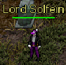
Return to Autumn to speak to Lord Solfein, Greetings. Have you come to inquire about the guard position at the underground shelter? Yes, I'd like to join the Astari Guard Lord Solfein looks you over.
Thank you for volunteering. Here are your commission papers. Return to the shelter, and report to Captain Laulban for your orders. And be careful - you're the fourth new recruit they've asked for this week.
QUEST UPDATE: Astari Supplies, Report to Captain Laulban in the Astari Shelter
 Return to the shelter and speak to Captain Laulban, So, you're the new recruit, eh? Very well. What are my duties? Your duties here are simple. The supplies and records in these chambers have been stored for the Astari people in case of an emergency, such as a second Rune War.
Our job is to protect them. We've been facing an infestation of poisonous green triddles lately. They come up through a trap door, way in the back of the shelter. Not the one just west of here - that goes down to the sewers. We're not sure where the one in the back leads. The vermin can't get in if the trap door stays closed, but some of these recruits are.. shall we say... forgetful.
So every once in a while the triddles get in and go after the supp,ies. And evey once in a while one of the recruits doesn't come back. We have to keep the trap door closed, and that is your first assignment. Follow this corridor to its end. The trap door is in the last room. Exterminate any insects that have come through. Be sure to check the lock on the trap door, and clse it if it's open. Then report back to me.
Return to the shelter and speak to Captain Laulban, So, you're the new recruit, eh? Very well. What are my duties? Your duties here are simple. The supplies and records in these chambers have been stored for the Astari people in case of an emergency, such as a second Rune War.
Our job is to protect them. We've been facing an infestation of poisonous green triddles lately. They come up through a trap door, way in the back of the shelter. Not the one just west of here - that goes down to the sewers. We're not sure where the one in the back leads. The vermin can't get in if the trap door stays closed, but some of these recruits are.. shall we say... forgetful.
So every once in a while the triddles get in and go after the supp,ies. And evey once in a while one of the recruits doesn't come back. We have to keep the trap door closed, and that is your first assignment. Follow this corridor to its end. The trap door is in the last room. Exterminate any insects that have come through. Be sure to check the lock on the trap door, and clse it if it's open. Then report back to me.
QUEST UPDATE: Astari Supplies, Check the trap door in the supply room
Go out and around to the south of the Captains office all the way to the west to the last door. There should be a few insects running around in the hallway. Spiders, or Green Triddles. Kill them then enter the room and close the trap door in the floor. You will be updated again.
QUEST UPDATE: Astari Supplies, Report to Captain Laulban in the Astari Shelter.
I'm glad to see you back in on piece, recruit. What do you have to report? I found the trapdoor. It was open, so I closed it. Good work. I'm glad to see that you can handle yourself, soldier. I have another assignment for you; Lord Malgoth over in Dunmarrow has asked us to send him certain documents from our files. Apparently, this shelter held the last remaining copy. I sent your predecessor to get them
, but like so many others, he never returned. The documents are filed away in a foot chest, in the room just before the one where the triddles are getting in. Go find these papers and bring them to me. But be careful - there may still be some insects about. Dunmarrow? Where's that? Dunmarrow is an ancient Astari city, beyond the river to the east. They say it survived the ravages of the Rune War because
of a blessing from the goddess Ulthien. I'm afraid I don't know the full story. Anyway, Lord Malgoth's request is legitimate if that's what you're concerned about. Now go.
QUEST UPDATE: Astari Supplies, Retrieve the documents from the footchest in the Astari Shelter.
Just like before head around to the south of the Captains office, go west to the second door and search the footchest  in this room. When you search the document you will be updated. *You search the footlocker but find no documents*
in this room. When you search the document you will be updated. *You search the footlocker but find no documents*
QUEST UPDATE: Astari Supplies, Report back to Captain Laulban.
By the scars of Arna! Missing you say? I know what must have happened. As I told you, the recruits we've lost have been disappearing completely. The insects must be dragging them down, through that accursed trap door, to their lair. If I'm to send Lord Malgoth his papers I need a brave and resourceful soldier to go down there and find them. You are the best I've got. Prepare carefully, and feel free to recruit others to help - we don't know what's down there. Find those documents and bring them back to me. Good luck, soldier!
QUEST UPDATE: Astari Supplies, Find the lost documents in the insect lair below the shelter.
 The lair is not a very big location, but you can go the wrong way a few times. If you get lost the map has the location were to go. You will encoutner Spiders, Brown Triddles, Green Triddles, Fireflies, and Termigon Warriors. When you reach the last area you will see a decaying corps.
The lair is not a very big location, but you can go the wrong way a few times. If you get lost the map has the location were to go. You will encoutner Spiders, Brown Triddles, Green Triddles, Fireflies, and Termigon Warriors. When you reach the last area you will see a decaying corps.  Click on it to receive the missing documents.
Click on it to receive the missing documents.
QUEST UPDATE: Astari Supplies, Papers found. Return to Captain Laulban!
Return to Captain Laulban. Excellent work! I'll have a runner carry these to Lord Malgoth in Dunmarrow immediately. I'm astounded by your account of the tunnel complex that lies beneath us. I'll be writing to Lord Solfein, explaining our need for even more new recruits. You, on the other hand, are too important to be wasted on guard duty. Any recruit off the street can guard these supplies. Very few can brave the perils you have faced. Effective immediately, I'm promoting you to Lieutenant and mustering you out of the Astari Guard.
With your promotion, you've earned The Sash of the Astari Guard. Wear it proudly! Here is your pay. Thanks again Lieutenant, and good luck!
- GOLD RECEIVED: 500
- ITEM RECEIVED: Sash of the Astari Guard
- 2,200 Experience Pool experience may very
Quest Complete
Gerald can now fish in peace! He gifted you with a Worn Guard Halfplate.Sentimental Value
| Difficulty | Skills |
|---|---|
| Adept | Combat |
| NPC Quest Start | Reward |
|---|---|
| Galun |

|
 Speak to Galun, Hail and well met. Hail, good sir. You look like a 'sturdy' adventurer. Perhaps you could do me a small faovor? Favor? My great-uncle, the honorable Lord Beldan, hasn't been seen for several years. When I last saw him, he was in possession of soemthing of great
sentimental value to me. When he disappeared, he was excavating an old temple near this lodge. I understand the temple is located in the fork of a great river. You should speak with Ursos about it. I believe he has seen it in his travels. Are you interested in helping me? I'm always up for a challenge Good, good. Glad to hear that you are brave.
I have to war you, the temple is rumored to be full of foul beasts. Some of them... *He laughs nervously* ... Of supernatural nature. But of course, who believes rumors these days? The item you are looking for is a great sword with a jewel-encrusted hilt. Return it to me and I will reward you well. Farewell and good luck.
Speak to Galun, Hail and well met. Hail, good sir. You look like a 'sturdy' adventurer. Perhaps you could do me a small faovor? Favor? My great-uncle, the honorable Lord Beldan, hasn't been seen for several years. When I last saw him, he was in possession of soemthing of great
sentimental value to me. When he disappeared, he was excavating an old temple near this lodge. I understand the temple is located in the fork of a great river. You should speak with Ursos about it. I believe he has seen it in his travels. Are you interested in helping me? I'm always up for a challenge Good, good. Glad to hear that you are brave.
I have to war you, the temple is rumored to be full of foul beasts. Some of them... *He laughs nervously* ... Of supernatural nature. But of course, who believes rumors these days? The item you are looking for is a great sword with a jewel-encrusted hilt. Return it to me and I will reward you well. Farewell and good luck.
 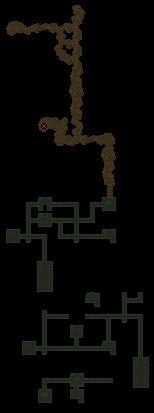
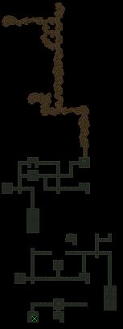
This temple is not to hard to navigate. I have marked the location of the Sea chest where the Gem Encrusted Hilt is located. There are plenty of enemies to fight though Cultist(9), Fighter(19), Skeletal Apprentice(8), Zombie(13), Small Skeleton(5), Shadow(17), Skeletal Warriors(17) Ghost(23). Once you reach the Large Sea Chest open it to spawn Soul of Beldan(10).
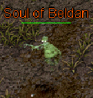 Kill him and you will be updated. QUEST UPDATE: You have found the gem-encrusted hilt of a broken sword The sharp blade of the sword is located on the 3 level down. When you find the next Large Sea Chest. Open it to spawn Body of Beldan(10) 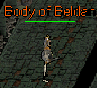
Kill him and you will be updated. QUEST UPDATE: You have found a very sharp blade from a broken sword.
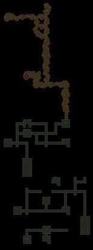
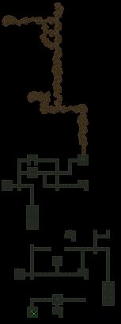
This temple is not to hard to navigate. I have marked the location of the Sea chest where the Gem Encrusted Hilt is located. There are plenty of enemies to fight though Cultist(9), Fighter(19), Skeletal Apprentice(8), Zombie(13), Small Skeleton(5), Shadow(17), Skeletal Warriors(17) Ghost(23). Once you reach the Large Sea Chest open it to spawn Soul of Beldan(10).
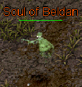 Kill him and you will be updated. QUEST UPDATE: You have found the gem-encrusted hilt of a broken sword The sharp blade of the sword is located on the 3 level down. When you find the next Large Sea Chest. Open it to spawn Body of Beldan(10) 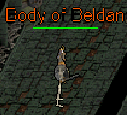
Kill him and you will be updated. QUEST UPDATE: You have found a very sharp blade from a broken sword.
QUEST RECEIVED: Sentimental Value, Return the pieces of the sword to Galun at the Autumn Hunting Lodge .
Travel back to the Hunting Lodge and speak to Galun. Ah... You found it! A pity the sword is shattered. I will take the hilt, as it contains gems of great... ...'sentimental' value to me. As for the blade take it to my personal blacksmith, Sathis in Silvest. He will craft you an item that will be a worthy reward.
QUEST RECEIVED: Sentimental Value, Seek the Blacksmith Sathis in Silvest.
- 5,500 Experience Pool experience may very
 Travel to Silvest and speak to Sathis, Good day! I do hope you're fealing better than I. Old bones do not move as swiftly or as surely as those of the young. I still have my craft, though! Fine blades I can craft yet.
I would speak to you about this blade. Ah- Beldan's blade. You found it then. Excellent. *He turns the blade over in his hands mumbling to himself* Yes, yes, still good material. I can do something with this.
Lord Galun gave you this, i assume, and kept the hilt? He did indeed. He said you could craft something for me as a reward. Excellent. Hold here a bit. I'll be back in two shakes of a dog's tail. *He winks at you and shoffles off* *He returns in a fairly short time and carefully hands you a beautiful dagger*
and here ye be. Thank you for assisting my lord in his quest. May you use the blade in continuing good health, my friend.
Travel to Silvest and speak to Sathis, Good day! I do hope you're fealing better than I. Old bones do not move as swiftly or as surely as those of the young. I still have my craft, though! Fine blades I can craft yet.
I would speak to you about this blade. Ah- Beldan's blade. You found it then. Excellent. *He turns the blade over in his hands mumbling to himself* Yes, yes, still good material. I can do something with this.
Lord Galun gave you this, i assume, and kept the hilt? He did indeed. He said you could craft something for me as a reward. Excellent. Hold here a bit. I'll be back in two shakes of a dog's tail. *He winks at you and shoffles off* *He returns in a fairly short time and carefully hands you a beautiful dagger*
and here ye be. Thank you for assisting my lord in his quest. May you use the blade in continuing good health, my friend.
- ITEM RECEIVED: Razor Bone Dagger
- 8,250 Experience Pool experience may very
Quest Complete
You received a Razor Bone Dagger from Sathis for assisting Lord GalunAdvanced Ranger Training
| Difficulty | Skills |
|---|---|
| Apprentice | Combat |
| NPC Quest Start | Reward |
|---|---|
| Tilis Oakwoven | 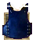"> |
 Speak to Tilis Oakwoven Greetings, traveler. Many come to learn from us elves the secrets of ranged weapons; Are you here to train your eyes and your mind? Yes. What do you require of me? I am a great teacher, indeed, but I will recommend you train with my colleagues. Go forth and search for 6 Elven Ranged Trainers.
They are located across the land of Darkwood. Visit Whisperdale, Autumn, Darkwood, and Lord Vezryl's Estate. Return to me once you have completed their training. Perhaps you should start with Silvi Thrushwood. He resides here in fair Whisperdale.
Speak to Tilis Oakwoven Greetings, traveler. Many come to learn from us elves the secrets of ranged weapons; Are you here to train your eyes and your mind? Yes. What do you require of me? I am a great teacher, indeed, but I will recommend you train with my colleagues. Go forth and search for 6 Elven Ranged Trainers.
They are located across the land of Darkwood. Visit Whisperdale, Autumn, Darkwood, and Lord Vezryl's Estate. Return to me once you have completed their training. Perhaps you should start with Silvi Thrushwood. He resides here in fair Whisperdale.
- Short Bow in Whisperdale Sivi Thrushwood
- Long Bow in Vezryl's Estate Ox Juurnuhk
- Small Crossbow in Autumn Ulver Muurnahknahk
- Large Crossbow in Whisperdale Tvistia Llywenen
- Vine Sling in Autumn Umduhk Dumdumuhk
- Vine Staff Sling in Vezryl's Estate Gar-Gar Mootarhk
QUEST RECEIVED: Advanced Ranger Training, Tilis Oakwoven of Whisperdale sent you to search Astari lands for 6 Elven Ranged Trainers.
Return to Tilis Oakwoven You have learned all the ranged combat skills from the trainers! This armor shall now fit you. Stalk the darkwoods, weave among the oaks. There is strength in staying. Stay strong and aid the night elves. *He salutes you*
- Night Elf Archer Cuirass
- 33,000 Experience Pool experience may very
???
Quest Complete
Steady Hand
| Difficulty | Skills |
|---|---|
| Apprentice | Combat 12 Bows |
| NPC Quest Start | Reward |
|---|---|
| Sivi Thrushwood |
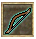">

|
 Speak to Silvi Thrushwood I see that Tilis has recommended you for Archery training. *He clears his throat* The best thing to remember when practicing Archery is a steady shot. To achieve this, you must still your nerves. It requires complete mastery of yourself.
I can see you are a bit...jumpy. Perhaps a good battle will help you focus. First, let's outfit you with a new bow. Hunt 50 Dragoons with this Oakwoven Short Bow.
Speak to Silvi Thrushwood I see that Tilis has recommended you for Archery training. *He clears his throat* The best thing to remember when practicing Archery is a steady shot. To achieve this, you must still your nerves. It requires complete mastery of yourself.
I can see you are a bit...jumpy. Perhaps a good battle will help you focus. First, let's outfit you with a new bow. Hunt 50 Dragoons with this Oakwoven Short Bow.
QUEST RECEIVED: Steady Hand, Use the Oakwoven Short Bow to slay 50 Dragoons for Silvi Thrushwood of Whisperdale.
 Head out the east side of Whisperdale following the road north untill you reach Lord Vezryl Estate. From there head west towards the coast once there go south to find a bridge that leads to the Dragoon Island. Kill 50 Dragoons. You will be updated as you kill them QUEST UPDATE: You have killed 50 Dragoons!
When you have killed all 50 you will be updated to return to Silvi Thrushwood.
Head out the east side of Whisperdale following the road north untill you reach Lord Vezryl Estate. From there head west towards the coast once there go south to find a bridge that leads to the Dragoon Island. Kill 50 Dragoons. You will be updated as you kill them QUEST UPDATE: You have killed 50 Dragoons!
When you have killed all 50 you will be updated to return to Silvi Thrushwood.
QUEST UPDATE: Steady Hand, Return to Silvi Thrushwood in Whisperdale to collect your reward!.
Return to Sivi Thrushwood, you have killed all the Dragoons with the Oakwoven Short Bow? I am honored to be your acquaintance. Were this belt proudly, as befits your accomplishment.
- Oakwoven Short Bow
- Night Elf Archer Belt
- 27,500 Experience Pool experience may very
You have completed Silvi Thrushwood's Short Bow Training!
Quest Complete
Stick Jab
| Difficulty | Skills |
|---|---|
| Apprentice | Combat 20 Bows |
| NPC Quest Start | Reward |
|---|---|
| Ellini Shadevail |
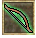">

|
 Speak to Ellini Shadevail Tilis and I have a bet going... He is very confident in you. *The tall elf examines you closely* Hmm... I just don't understand... *The tall elf mumbles to himself* Let's just get it over with. I will now teach you the ways of the Stick-Jab. Attack with fast attacks, piercing
the enemy with as many holes as possible. A fluid hand is key. You cannot break your concentraton. And I have the PERFECT test for your concentration. Hunt 50 Shadows with this Oakwoven Long Bow. If you pierce them with many holes they will dissipate.
QUEST RECEIVED: Stick Jab, Kill 50 Shadows with the Oakwoven Long Bow for Ellini Shadevail of Vezryl's Lodge.
Speak to Ellini Shadevail Tilis and I have a bet going... He is very confident in you. *The tall elf examines you closely* Hmm... I just don't understand... *The tall elf mumbles to himself* Let's just get it over with. I will now teach you the ways of the Stick-Jab. Attack with fast attacks, piercing
the enemy with as many holes as possible. A fluid hand is key. You cannot break your concentraton. And I have the PERFECT test for your concentration. Hunt 50 Shadows with this Oakwoven Long Bow. If you pierce them with many holes they will dissipate.
QUEST RECEIVED: Stick Jab, Kill 50 Shadows with the Oakwoven Long Bow for Ellini Shadevail of Vezryl's Lodge.
- Oakwoven Short Bow
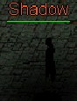
Head west of Lord Vezryl's Lodge and kill 50 shadows. As you are killing them you will be updated. QUEST UPDATE: You have killed 50 Shadows! When you have killed all of them you will updated.
QUEST UPDATE: Stick Jab, Return to Ellini Shadevail in Lord Vezryl's Estate to collect your reward!
Return to Ellini Shadevail, Excellent! So splendid. The odds were not looking great for you if I may be truthful. I suppose I have to settle with Tilis later... on... as thanks for ridding us of those horrid Shadows... I have a gift for you.
- Night Elf Archer Boots
- 27,500 Experience Pool experience may very
You have completed Ellini Shadevail's Long Bow Training!
Quest Complete
Slow and Steady
| Difficulty | Skills |
|---|---|
| Apprentice | Combat 13 Crossbows |
| NPC Quest Start | Reward |
|---|---|
| Rigel Underdark |


|
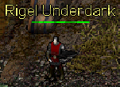
Speak to Rigel Underdark, Tilis has done well to send you to me. We could use some good steady hands on the crossbow. Learning to properly fire a crossbow takes diligence and self-discipline. They might attack slower, but with a precise shot, you can do a tremendous amount of damage to perfect your aim, slay a great number of Termigon Workers with this Splinterwood Small Crossbow.
Do not rush... you cannot expect good results from sloppy work.
QUEST RECEIVED: Slow and Steady, Using the Splinterwood Small Crossbow, kill 75 Termigon Workers for Rigel Underdark of Autumn.
- Splinterwood Small Crossbow
 Head east across the land bridge then south around the mountain to find the Termigon Workers. While killing them you will be updated. QUEST UPDATE: You have killed 75 Termigon Workers! When you have killed all of them you will be updated.
Head east across the land bridge then south around the mountain to find the Termigon Workers. While killing them you will be updated. QUEST UPDATE: You have killed 75 Termigon Workers! When you have killed all of them you will be updated.
QUEST UPDATE: Slow and Steady, Return to Rigel underdark in Autumn to collect your reward!
Return to Rigel Underdark, Adventurer! You are back so soon! Hoever, did you manage to complete the task? Never mind. I would love to hear tales of your battles, but I can tell you are in a hurry. Here, take this piece of armor. I hope it inspires a spirit of patience in you.
- Night Elf Archer Cape
- 27,500 Experience Pool experience may very
You have completed Rigel Underdark's Crossbow Training!
Quest Complete
Slow and Steady
| Difficulty | Skills |
|---|---|
| Apprentice | Combat 13 Crossbows |
| NPC Quest Start | Reward |
|---|---|
| Rigel Underdark |
|
Speak to Rigel Underdark, Tilis has done well to send you to me. We could use some good steady hands on the crossbow. Learning to properly fire a crossbow takes diligence and self-discipline. They might attack slower, but with a precise shot, you can do a tremendous amount of damage to perfect your aim, slay a great number of Termigon Workers with this Splinterwood Small Crossbow.
Do not rush... you cannot expect good results from sloppy work.
QUEST RECEIVED: Slow and Steady, Using the Splinterwood Small Crossbow, kill 75 Termigon Workers for Rigel Underdark of Autumn.
- Splinterwood Small Crossbow
Head east across the land bridge then south around the mountain to find the Termigon Workers. While killing them you will be updated. QUEST UPDATE: You have killed 75 Termigon Workers! When you have killed all of them you will be updated.
QUEST UPDATE: Slow and Steady, Return to Rigel underdark in Autumn to collect your reward!
Return to Rigel Underdark, Adventurer! You are back so soon! Hoever, did you manage to complete the task? Never mind. I would love to hear tales of your battles, but I can tell you are in a hurry. Here, take this piece of armor. I hope it inspires a spirit of patience in you.
- Night Elf Archer Cape
- 27,500 Experience Pool experience may very
You have completed Rigel Underdark's Crossbow Training!
Quest Complete
Wait for It
| Difficulty | Skills |
|---|---|
| Apprentice | Combat 20 Crossbows |
| NPC Quest Start | Reward |
|---|---|
| Tvistia Llywenen | 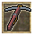"> 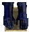"> |
 Speak to Tvistia Llywenen, Shooting a Large Crossbow takes special talent. Come closer, I'll show you... You load bolt, pull back the string, and hold your fire... Wait... Hold ever so still... ... Then fire the shot! Always aim for a weak part of the armor. You must study your targets well, or risk close combat. Why don't you try? Practice makes perfect... I think Termigon Warriors will
make a good target. Use my Splinterwood Large Crossbow. I know you'll take good care of it.
Speak to Tvistia Llywenen, Shooting a Large Crossbow takes special talent. Come closer, I'll show you... You load bolt, pull back the string, and hold your fire... Wait... Hold ever so still... ... Then fire the shot! Always aim for a weak part of the armor. You must study your targets well, or risk close combat. Why don't you try? Practice makes perfect... I think Termigon Warriors will
make a good target. Use my Splinterwood Large Crossbow. I know you'll take good care of it.
QUEST RECEIVED: Wait for It, Kill 75 Termigon Warriors with the Splinterwood Large Crossbow for Tvistia Llywenen of Whisperdale.
- Splinterwood Large Crossbow
 Head out the east gate to Autumn then across the land bridge south around the mountain to find the Termigon Warriors. While killing them you will be updated. QUEST UPDATE: You have killed 75 Termigon Warriors! When you have killed all of them you will be updated.
Head out the east gate to Autumn then across the land bridge south around the mountain to find the Termigon Warriors. While killing them you will be updated. QUEST UPDATE: You have killed 75 Termigon Warriors! When you have killed all of them you will be updated.
QUEST UPDATE: Wait for It, Return to Tvistia Llywenen in Whisperdale to collect your reward!
Return to Tvistia Llywenen, Very impressive... you have made remarkable progress with the Large Crossbow! oh, before you go... I have a gift for you. These gloves shall serve you well, fellow archer...
- Night Elf Archer Gloves
- 27,500 Experience Pool experience may very
You have completed Tvistia Llywenen's Large Crossbow Training!
Quest Complete
Loading the Sling
| Difficulty | Skills |
|---|---|
| Apprentice | Combat 12 Thrown Weapons |
| NPC Quest Start | Reward |
|---|---|
| Alithian Leafwhisper | 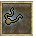"> 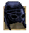"> |
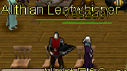
Speak to Alithian Leafwhisper, Shhh... We don't need to make a big fuss out of your training. Let's begin. There is a secret I've learned. Wind up, like a whirligig, and flick your wrist at just the right time... *He knocks a pebble off of the top of a stack of pebbles* Did you see it? Quite stealthy, I know. *He wears a smug grin*
It takes some practice to master this trick. Let's see what you can do. The Cultists have always been a nuisance... I just don't know what they're up to... Lurking around and mumbling the way they do... I think they'd be a perfect target. Kill 50 Cultists with this Enchanted Vine Sling.
QUEST RECEIVED: Loading the Sling, Test your sling skills by killing 50 Cultists with the Enchanted Vine Sling.
- Enchanted Vine Sling
Head east of Autumn across the land bridge north east past the rivers south of the northern mountains west of Mnemnon. Kill the Cultists. While killing them you will be updated. QUEST UPDATE: You have killed 50 Cultists! When you have killed all of them you will be updated.
QUEST UPDATE: Loading the Sling, Return to Alithian Leafwhisper in Autumn.
Return to Alithian Leafwhisper, Where the Cultists a good quarry for you? *He grins slyly* I have a special surprise for you! It will greatly help you in combat, I'm sure.
- Night Elf Archer Helm
- 27,500 Experience Pool experience may very
You have completed Alithian Leafwhisper's Sling Weapons Training!
Quest Complete
Snappy
| Difficulty | Skills |
|---|---|
| Apprentice | Combat 15 Thrown Weapons |
| NPC Quest Start | Reward |
|---|---|
| Tagonis Weatheroot |


|
 Speak to Tagonis Weatheroot, You seek my training in the ways of Thrown Weapons? *He mutters under his breath...* I suppose they'll let anyone train these days. Can you gain the skill needed to properly use a staff sling? It's different than a regular sling. Instead of flicking your wrist, you snap your body when you want to release the rock.
Well, if you insist on trying... Take this enchanted Vine Staff Sling. Return to me once you've killed 50 Skeletal Pups with it.
Speak to Tagonis Weatheroot, You seek my training in the ways of Thrown Weapons? *He mutters under his breath...* I suppose they'll let anyone train these days. Can you gain the skill needed to properly use a staff sling? It's different than a regular sling. Instead of flicking your wrist, you snap your body when you want to release the rock.
Well, if you insist on trying... Take this enchanted Vine Staff Sling. Return to me once you've killed 50 Skeletal Pups with it.
QUEST RECEIVED: Snappy, Tagonis Weatheroot wants you to practice using the Enchanted Vine Staff Sling to hunt 50 Skeletal Pups.
- Enchanted Vine Staff Sling
Head southwest just north of Whisperdale near the coast to find the Skeletal Pups. While killing them you will be updated. QUEST UPDATE: You have killed 50 Skeletal Pups! When you have killed all of them you will be updated.
QUEST UPDATE: Snappy, Return to Tagonis Weatheroot in Lord Vezryl's Estate to complete your training.
Return to Tagonis Weatheroot, I just can't be sure that you aren't exaggerating, but the sling does seem broken in... *He narrows his eyes* I am obligated to bestow upon you a reward. Do take care of it, unlike the rest of your equipment...
- Night Elf Archer Greaves
- 27,500 Experience Pool experience may very
Tagonis hesitantly agreed to complete your Staff Sling Training!
Quest Complete